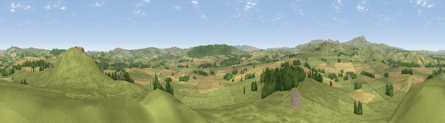

Viewpoint near Glanton
#7975 in England · top 32% of its area beats it · near GlantonThe view, rendered

A 360° render of this exact spot computed from the terrain model, tree cover and land cover — summer colours, afternoon light, calibrated against photographs of famous viewpoints. Real trees, hedges and buildings will differ in detail.
The panorama
Grey silhouette: terrain skyline in each direction (720 bearings, Earth curvature and refraction included). Dashed green: skyline with trees (+15 m) and buildings (+8 m) as obstacles. Blue strip: how far the ground is visible on each bearing.
Where the view opens
Wedge length = distance to the farthest visible ground on that bearing (vegetation-aware). Rings at 10, 25 and 50 km.
What fills the view
65% grassland · 24% cropland · 10% woodland
Angular shares of the visible panorama (visual magnitude), not map area. Landscape diversity 0.39 (0–1 Shannon).
Key numbers
More beautiful places nearby
The staircase of upgrades: each row has a higher view potential than everything closer. Driving times are estimates from straight-line distance, calibrated against real road routing — check an actual route before setting out.
| Place | Direction | Drive | Score |
|---|---|---|---|
| Glanton Hill | ENE · 0 km | ~2 min | 66.7 |
| Viewpoint near Glanton | ENE · 3 km | ~7 min | 82.9 |
| Viewpoint near Eglingham | N · 7 km | ~15 min | 83.8 |
| Viewpoint near Chillingham | N · 11 km | ~21 min | 88.1 |
| Viewpoint near Easington | SE · 116 km | ~141 min | 90.2 |
| The Knoll | S · 529 km | ~479 min | 91.0 |
55.42527, -1.90340 · source: screening · position refined by local search. Computed location — check access rights before visiting.